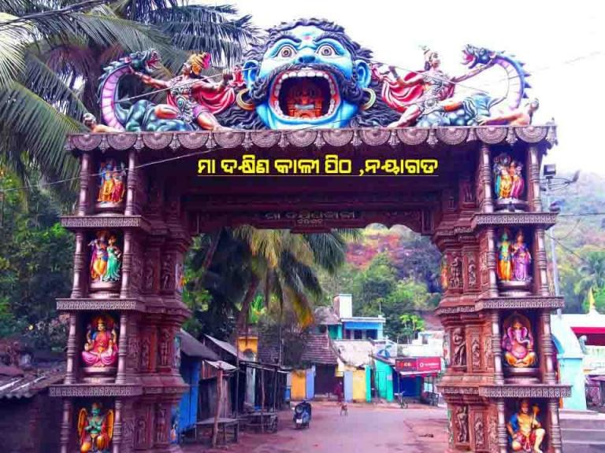

Dakshin Kali Pitha · Old Town, Nayagarh
The Maa Dakhinakali Temple — written on its gateway as Maa Dakshin Kali Pitha, Nayagarh — is one of the old and well-known temples of Nayagarh town. It stands in the Old Town area, about 1 km from the Nayagarh bus stand, and Nayagarh itself is roughly 90 km from Bhubaneswar.
The goddess worshipped here is Dakshina Kali, described as a benign and kind form of Mother Goddess Kali, who is believed to grant the wishes of her devotees and bless them. The temple is built in the Odisha style, and its compound also has shrines of Lord Shiva, Lord Ganesha and Goddess Lakshmi.
Local people call the temple old, but we could not find a firm date for its founding in the sources available, so none is given here.

The temple’s entrance gateway is one of the most colourful sights in the Old Town. Painted figures of gods and goddesses, Ganesha among them, fill the pillars on both sides. Above the archway a huge blue face of the goddess with wide eyes and an open mouth looks over every visitor, flanked by coiling serpent figures.
Beyond the gate the road leads between small shops and houses, with green hills rising behind the town.
Pana Sankranti (Mahavishuva Sankranti), on 14 or 15 April, is the main festival of the temple. Special worship of the goddess is also held on Chaturdashi and Amavasya (new-moon) days, and Kali Puja is another major occasion.
The district’s official tourism pages also list a Dakhinakali festival among the important festivals celebrated in Nayagarh.
Listed temple timings are about 6:00 am to 12:05 pm and 12:30 pm to 8:00 pm — please confirm locally, as timings can change on festival days. Dress modestly and remove footwear before entering.
The bus stand is only about a kilometre away, so the temple is easy to reach on foot or by auto. It combines well with the Jagannath Temple and Balangi Bandha Park in a single day in town.
Tap a photo to see it bigger.